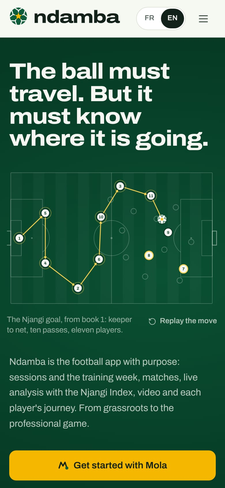
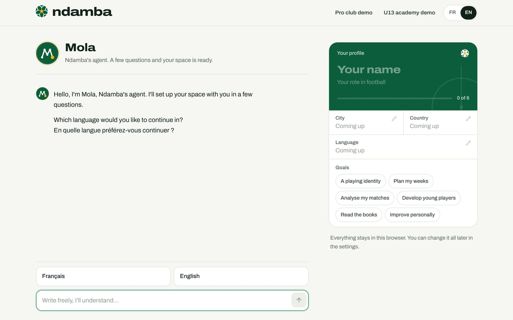
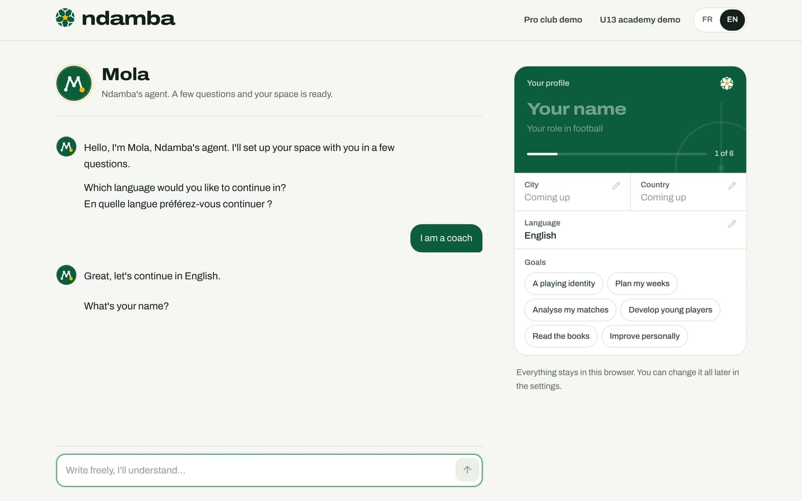

Set up with Mola
Your first visit step by step, the welcome conversation with Mola, the profile card that fills itself in as you talk, the two demos and what they replace, coming back later and starting over.
9 min read
A sign-up form quickly puts off a busy youth coach. Writing a message, on the other hand, is something everyone does every day, in French, in English or in a mix of both. That is why Ndamba does not start with a form but with a conversation. Mola, Ndamba’s agent ("Mola" means "mate" in Cameroonian camfranglais), asks a few questions, understands answers written in your own words and fills in your profile before your eyes. In a few minutes your space is ready: for a coach, the team already exists, with its players if you pasted their list. No account, no e-mail address, no password.
Opening the conversation
The conversation lives on the welcome page (/bienvenue). There are three ways in:
- the gold Get started with Mola button on the site’s home page;
- the Get started button at the top right of the site;
- opening any page of the app without a profile: Ndamba takes you there.


The page is deliberately bare. At the top: the logo, the two demos and the FR or EN switch. On a computer, the conversation sits on the left and your profile card on the right. On a phone, the card is folded at the top of the screen as a bar with a small progress ring; tap it to unfold it. The two demos are gathered into a single Demo button.


Mola introduces itself: "Hello, I’m Mola, Ndamba’s agent. I’ll set up your space with you in a few questions." Then it asks its first question in English and in French at once, since it does not yet know which language you prefer.
The conversation, question by question
Under the conversation, Mola offers ready-made answers to tap at every step. You can also type freely in the "Write freely, I’ll understand…" box and send with the Enter key or the arrow.
- Language. Tap Français or English, or type it. Mola confirms ("Great, let’s continue in English.") and the whole page switches to that language. At this step Mola only takes the language: keep everything else for the next questions.
- Your name. "What’s your name?" Type your name the way you want to see it in the app.
- Your role. "In football, you are:" followed by six choices: Coach or educator, Player, Analyst, Parent, Manager or technical director, Federation or league.
- The questions for your role. They change with the role you chose (see the table below).
- Your city, then your country. Mola offers Douala, Yaoundé, Garoua, Bafoussam, Abidjan and Dakar, or Skip. When the city is enough to know the country, it skips the next question and simply notes "Got it: Cameroon.".
- Your goals. "Last question: what do you expect from Ndamba?" Tap as many goals as you like (for instance A playing identity, Plan my weeks, Analyse my matches, Develop young players, Read the books), then Confirm this choice (or Confirm these 3 choices if there are three), or Later.
- Review. "Thank you Daniel. Here is your profile. Tap a field to correct it, then create your space." The gold Create my space button appears.


| Role chosen | What Mola asks next |
|---|---|
| Coach or educator | The team’s name, its age group (from U8 to pro seniors), the format (5 v 5 to 11 v 11), then the list of players |
| Player | The age group (your age is enough), the position, the club (or No club) |
| Analyst | The club or team you analyse for |
| Parent | The child’s age or age group |
| Manager or technical director | Your organisation |
| Federation or league | Your organisation |
Two details make it faster for a coach. If you choose Pro seniors, Mola does not ask for the format: professional football is eleven a side. And the player list can be pasted in one go, one player per line, with the shirt number if you have it ("9 Samuel Owona"). In that box, Enter starts a new line; send with Ctrl + Enter or the arrow. Mola replies, for example, "I’ve read 3 players.". No list to hand? Tap Later: you will add players to the squad afterwards (chapter 10).
Answering in one sentence
Mola does not force you to answer one question at a time. A single sentence can fill several fields at once. When asked your name, you can write, for example: "I’m Daniel Mbarga, coach of Étoile de la Côte, top flight, in Douala". Mola replies "Got it: coach, Pro seniors, 11 v 11, Douala (Cameroon), Étoile de la Côte." and jumps straight to the player list. Questions it already has the answer to are not asked again. If it does not understand an answer, it says so ("I didn’t quite get that.") and asks again.
The profile card that fills itself in
While you talk, the Your profile card fills in. It looks like a club licence: a green band with your name and role, a progress bar and a counter, such as "1 of 6" at the start or "10 of 10" for a coach who has answered everything. The number of fields depends on the role: a coach also has the team, the age group, the format and the players.
Each field shows its value, or "Coming up" while it is still empty. A field that has just been filled lights up for a moment, so you can see what Mola understood. Under the card, one sentence sums up the essentials: "Everything stays in this browser. You can change it all later in the settings."
There are two ways to correct something:
- Tap the field on the card (a small pencil marks it). An input box or a list of choices opens; save with the tick, cancel with the cross. Goals are ticked and unticked right on the card.
- Tell Mola. At the review, the input box becomes "A correction? Just say it". Write, for example, "I’m in Yaoundé": Mola answers "Got it: Yaoundé." and the card updates.
If your correction answers the question on screen, Mola moves on to the next one.
Creating the space
When the card looks right, tap Create my space ("You can change everything afterwards."). Mola writes "Setting up your space." and ticks off its steps one by one:
- Profile created
- Team … created, with your team’s name (for a coach who gave one)
- … players added (if you pasted a list)
- Mola is ready to work
The app then opens on your home screen (chapter 6). Your profile starts on the Free plan. A welcome message from Mola waits in the round button at the bottom right, marked with a green dot; for a coach, it offers to plan the first week, set up a match or suggest drills.
Only the coach role creates a team during the conversation. An analyst, a technical director or a federation adds teams afterwards, from the home screen or from Settings.
The two demos
Want to see Ndamba full of data before creating your own space? Two complete demos open in a single tap, from the site’s home page or from the bar of the welcome page: Pro club demo and U13 academy demo. They feature invented clubs and people.
| Pro club demo | U13 academy demo | |
|---|---|---|
| The team | Étoile de la Côte, a top-flight senior side in Douala | Lionceaux de Bonamoussadi U13, Kaydoudou and BriBri’s team |
| You are | Daniel Mbarga, coach | Tonton Fokou, youth coach |
| The squad | 22 players, in a 4-3-3 | 15 players, in a 4-3-3 |
| The week | Recovery after the match, then MD-4 to MD-1 | MD-4 to MD-1 |
| The past | Three league matches played, the last one tagged live (2-1 against Météore de Bafoussam) | Four matches played and tagged, the last one won 2-1 against Requins de Bépanda |
| What’s next | Away at Rapides de Kribi on Saturday, then a cup tie and a league match | Away at Panthères de Deïdo on Saturday |
| The plan | Coach Pro, activated as a demo | Coach Pro, activated as a demo |

The demo’s dates follow the real calendar: the next match always falls on the Saturday of the current week, with the week’s sessions around it. The demo’s texts are written in the language that is active when you start it. When the demo opens from the welcome page, Mola leaves a message there: "Welcome to the demo, Daniel. You coach Étoile de la Côte: 22 players, a week of sessions, one match already analysed and a match coming up on Saturday. Ask me anything, for example to analyse the last match or to draft the call-up." For the academy, the message announces 15 players and "4 matches already analysed".
What a demo replaces
A demo is not added to your data: it replaces what this browser holds for Ndamba. Profile, teams, players, sessions, matches, tagged actions, Mola’s conversation and tasks, notebook, challenges, videos, assessments, observations, attendance, objectives, big moments and the form log: all of it is erased, then filled with the demo. The lessons marked "I’ve got it" and the player space’s "My view" are erased too. Only the chosen language stays. Switching from one demo to the other replaces the first one too.
Ndamba protects you: if this browser holds your own space, a "Start the demo?" window warns you and invites you to export a backup first; you have to tap Start the demo to go ahead, or Cancel. The window opens from the site’s home page and from the bar of the welcome page alike (its Demo menu on a phone).
Coming back later
A conversation you interrupt is not lost while the tab stays open: if you reload the page, you pick up where you left off. If you close the tab before Create my space, the conversation starts again from the beginning.
Once the space is created, everything is saved in this browser. Come back whenever you like: the site’s button now reads Open the app, and the app opens straight onto your home screen. If you go back to the welcome page, Mola recognises you: "Welcome back, Daniel. Your Ndamba space is ready in this browser." Two buttons wait for you: Open the app and Start again with a new profile.
On another device or in another browser, your space does not exist yet: you need to restore an exported backup there (chapter 6).
Starting over
There are three ways to start again, from the gentlest to the most radical.
| What you do | What changes | What stays |
|---|---|---|
| Start again with a new profile (welcome page) | A new conversation; at the end, the new profile replaces the old one and starts again on the Free plan | Your teams, sessions and matches |
| Start a demo | Everything is replaced by the demo | Nothing |
| Erase everything (Settings, Your data panel) | Everything is deleted and you return to the site’s home page | Nothing |
The first option is meant for changing role or name without losing your work, as Mola puts it: "Starting again replaces your profile at the end of the conversation. Your sessions and matches stay." For a simple change of name, role or language, Settings is enough, with nothing to start over.